")
Verteidigung - Rüstzeug
Einführung
Dies ist eine Liste des verfügbaren Rüstzeugs und einer kurzen Beschreibung zu jeder Art.
Nahkämpfer-Rüstzeug
| Rüstzeug | Anmerkungen | |
 Halbhelme (Bronze, Eisen, Stahl, Schwarz, Weiß (M), Mithril, Adamant, Runit, Drachen (M)) |
Halbhelme bieten leichten Schutz gegen die meisten Angriffsarten und behindern den eigenen Angriffsstil nur wenig. Das macht sie zu einer beliebten Wahl für Spieler, die Nahkampf bevorzugen, aber trotzdem noch Magie und Fernkampf benutzen möchten. |
|
| 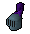 Vollhelme (Bronze, Eisen, Stahl, Schwarz, Weiß (M), Mithril, Adamant, Runit, Drachen (M)) |
Vollhelme bedecken und schützen den Kopf des Benutzers vollständig. Wie bei allem Rüstzeug aus Metall ist es allerdings besonders anfällig gegen magische Angriffe. Im Gegensatz zu Halbhelmen haben Vollhelme außerdem viel größere Mali auf Magie- und Fernkampf-Angriffe. |
|
 Kettenhemden (Bronze, Eisen, Stahl, Schwarz, Weiß (M), Mithril, Adamant, Runit, Drachen (M)) |
Kettenhemden werden aus kleinen, zusammengefügten Metallringen hergestellt. Sie bieten sehr guten Schutz gegen Hieb- und Schlagwaffen. Gegen Stichwaffen bieten sie allerdings wenig Schutz, da die Spitze einer solchen Waffe die Ringe leicht durchdringen kann. Man kann sich in Kettenhemden immer noch gut bewegen, wodurch man für ihre Benutzung keinen Malus auf Fernkampfangriffe erhält. Magier werden allerdings feststellen, dass Kettenhemden das Sprechen einiger Zauber mit feineren Techniken stören. |
|
 Plattenpanzer (Bronze, Eisen, Stahl, Schwarz, Weiß (M), Mithril, Adamant, Runit, Drachen (M)) |
Plattenpanzer sind viel schwerer und stärker als Kettenhemden. Sowohl Fernkämpfer als auch Magier werden Schwierigkeiten damit haben, ihre Zauber oder Bögen in einer Plattenrüstung zu benutzen. Plattenpanzer schützen nicht besonders gut vor Schlagwaffen, da sie den Aufprall nicht so gut abfangen können wie den von Hieb- oder Stichwaffen. |
|
![[Bild]](../../img/main/kbase/armour/barrows/dharok_body.gif) ![[Bild]](../../img/main/kbase/armour/barrows/guthan_body.gif) ![[Bild]](../../img/main/kbase/armour/barrows/torag_body.gif) ![[Bild]](../../img/main/kbase/armour/barrows/verac_body.gif) Grabhügel-Rüstzeug (M) (Dharok, Guthan, Torag, Verac) |
Man sagt, dass Grabhügel-Rüstzeug aus einer längst vergessenen Zeit stammt und sehr mächtig ist. Man erhält sie durch das Minispiel 'Kampf den Brüdern'. Wenn man das Glück hat, alle Teile des Satzes (inklusive der Waffe) zu erhalten, wird man mit einem speziellen Effekt belohnt. Um weitere Details darüber zu erhalten, lest bitte unter Kampf den Brüdern - Belohnungen nach. Veracs Rüstzeug verleiht seinem Träger außerdem auch einen hohen Gebetsbonus. |
|
| 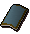 Vierecksschilde (Bronze, Eisen, Stahl, Schwarz, Weiß (M), Mithril, Adamant, Runit, Drachen (M)) |
Vierecksschilde sind eine hervorragende Wahl für alle Nahkämpfer, da die Boni nur etwas geringer ausfallen als bei Pentaschilden. Vierecksschilde schützen allerdings nicht so gut gegen Schlagwaffen. |
|
 Pentaschilde (Bronze, Eisen, Stahl, Schwarz, Weiß (M), Mithril, Adamant, Runit) |
Pentaschilde bieten besseren Schutz als Vierecksschilde, obwohl sie, so wie das meiste schwere Rüstzeug, nicht sehr gut in Kombination mit Magie oder Fernkampf benutzt werden können. Pentaschilde sind nicht gut gegen Stichwaffen geeignet. |
|
 Kristall-Schild (M) |
Der Kristall-Schild kann erst benutzt werden, wenn man das Abenteuer Die wandernden Elfen abgeschlossen und Gewandtheit mindestens auf Stufe 50 trainiert hat. Der Kristall-Schild schützt vor allem gegen Fernkampfangriffe, ist gegen magische Attacken aber fast nutzlos. Der Schutz, den dieser Schild bietet, wird immer schlechter, je länger man ihn benutzt, bis er sich schließlich wieder in den Kristall-Samen zurückverwandelt, aus dem er entstanden ist. |
|
![[Bild]](../../img/main/kbase/weapons/melee/tzhaar/tzhaarshield.gif) Toktz-Ket-Xil (M) |
Der Toktz-Ket-Xil der TzHaar verbessert nicht nur eure Verteidigung (Werte ähneln einem Runit-Pentaschild), sondern verleiht auch einen Bonus von +5 auf Stärke und einen recht hohen Bonus gegen Fernkampf-Angriffe. |
|
![[Bild]](../../img/main/kbase/items/quests/antidragon_shield.gif) Antidrachen-Schild |
Dieser Schild ist im Kampf gegen Feuer speiende Drachen unerlässlich, da er den Schaden durch solche Attacken reduziert. Man sollte ihn immer benutzen, wenn man gegen Drachen in den Kampf zieht. Gegen normale Angriffe ist er allerdings nicht sehr gut geeignet. Wenn man den Schild mit einem Drachen-Antlitz versieht, erhält man den legendären Drachenfeuer-Schild. |
|
![[Bild]](../../img/main/kbase/armour/melee/dragonfire/dragonfire_shield.gif) Drachenfeuer-Schild (M) |
Der Drachenfeuer-Schild ist ein ausgezeichneter Gegenstand, da er eine hohe Verteidigung bietet und außerdem alle Vorteile eines Antidrachen-Schilds besitzt. Um ihn im vollen Umfang zu benutzen, muss man ihn mit Drachenfeuer aufladen, welches dann später gegen eure Gegner eingesetzt werden kann. Klickt hier, um mehr über den Drachenfeuer-Schild zu erfahren. |
|
![[Bild]](../../img/main/kbase/skills/dungeoneering/items/reward/chaotic_kiteshield.gif) 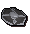 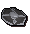![[Bild]](../../img/main/kbase/skills/dungeoneering/items/reward/farseer_kiteshield.gif) Kerkerkunde-Schilde (M) |
Die drei Daemonheim-Schilde absorbieren Schaden, der mindestens 200 Trefferpunkte beträgt. Jeder Schild hat leicht andere Werte, kann aber bis zu 20 % des jeweiligen Schadenstyps absorbieren. Der Weitseher-Pentaschild absorbiert beispielsweise 10 % des Magieschadens und bis zu 20 % aller Nahkampfangriffe. Bei Fernkampfschaden hilft er jedoch nicht. |
|
![[Bild]](../../img/main/kbase/armour/melee/fris/yakhide_torso.gif) ![[Bild]](../../img/main/kbase/armour/melee/fris/yakhide_legs.gif) ![[Bild]](../../img/main/kbase/armour/melee/fris/roundshield.gif) Grunzochsenhaut (M) |
Die Grunzochsen auf Neeisnich sind für ihre Zähheit und Standhaftigkeit bekannt. Obwohl Grunzochsenhaut nicht oft für tradtionelles Nahkämpfer-Rüstzeug verwendet wird, ist es hervorragend gegen Felswürfe von Eistrollen geeignet. |
|
![[Bild]](../../img/main/kbase/armour/melee/rockshellhelm.gif) ![[Bild]](../../img/main/kbase/armour/melee/rockshellplate.gif) ![[Bild]](../../img/main/kbase/armour/melee/rockshelllegs.gif) ![[Bild]](../../img/main/kbase/armour/melee/rockshellboots.gif) ![[Bild]](../../img/main/kbase/armour/melee/rockshellgloves.gif) Felskrabben-Rüstzeug (M) |
Fremennik-Krieger, die viele Dagannoths unter der Waterbirth-Insel besiegt haben werden früher oder später Teile ihrer geschlagenen Gegner in den Kampf tragen. Dieses Rüstzeug bietet ähnlichen Schutz wie Runit-Rüstzeug. |
|
![[Bild]](../../img/main/kbase/armour/melee/granite_shield.gif) ![[Bild]](../../img/main/kbase/armour/melee/granite_legs.gif) ![[Bild]](../../img/main/kbase/armour/melee/granite_helm.gif) ![[Bild]](../../img/main/kbase/armour/melee/granite_body.gif) Granit-Rüstzeug (M) |
Granit-Rüstzeug ist besonders stark und widerstandsfähig. Für die Benutzung benötigt man Verteidigung und Stärke mindestens auf Stufe 50. Granit-Rüstzeug hat etwas bessere Werte als Runit-Rüstzeug. Da Granit-Rüstzeug aus einem besonders harten Stein besteht, ist es gegen Fernkampfangriffe besonders wirksam. |
|
![[Bild]](../../img/main/kbase/armour/melee/trail_items/fighter_helm.gif) ![[Bild]](../../img/main/kbase/armour/melee/trail_items/fighter_shield.gif) 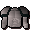 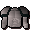![[Bild]](../../img/main/kbase/armour/melee/trail_items/silver_plate_legs.gif) Rüstzeug des 3. Zeitalters (M) |
Rüstzeug des 3. Zeitalters ist sehr selten und sehr widerstandsfähig. Ein kompletter Satz dieser Ausrüstung bietet den besten Schutz, den ein Nahkämpfer sich wünschen könnte. Im Vergleich zum Grabhügel-Satz beinhaltet das Rüstzeug des 3. Zeitalters allerdings einen Schild. Wenn man einen Grabhügel-Satz also mit einem guten Schild benutzt, bietet es einen ebenso guten, wenn nicht noch besseren, Schutz wie das Rüstzeug des 3. Zeitalters. | |
![[Bild]](../../img/main/kbase/armour/melee/godwars/bandos_chestplate.gif) ![[Bild]](../../img/main/kbase/armour/melee/godwars/bandos_tassets.gif) 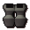 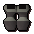Bandos' Rüstzeug (M) |
Bandos ist ein Kriegsgott, dessen Anhänger nichts lieber mögen als ihre Gegner zu Fall zu bringen. Das Rüstzeug, das seine besten Krieger bekommen, ermöglicht es, sich hervorragend zu verteidigen - ganz davon zu schweigen, dass, wer es trägt, so furchterregend aussieht wie ein randalierender Ork. | |
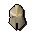![[Bild]](../../img/main/kbase/combat/pvp/member/platebody.gif) ![[Bild]](../../img/main/kbase/combat/pvp/member/platelegs.gif) ![[Bild]](../../img/main/kbase/combat/pvp/member/chainbody.gif) ![[Bild]](../../img/main/kbase/combat/pvp/member/plateskirt.gif) Rüstzeug von Statius und Vesta (M) |
Zu den Zeiten der Götterkriege, als großartige Krieger die Lande durchstreiften und unzählige Feinde niederstreckten, gab es zwei mächtige Helden: Statius und Vesta. Ihr Rüstzeug, vom erneuten Blutvergießen angezogen, kommt nun wieder zum Vorschein. Zum Glück für die Gegner der Leute, die diese Gegenstände finden, fangen sie schnell an zu zerfallen. |
Fernkämpfer-Rüstzeug
| Rüstzeug | Anmerkungen | |
 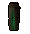 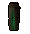  Leder (Leder, Hart, Nieten) |
Rüstzeug aus Leder ist zwar schwach, kann aber verbessert werden, indem man es härtet oder mit Nieten versieht. Leder eignet sich gut gegen Schlagwaffen und schwächere Stichwaffen. Es schränkt die Bewegungsfreiheit des Benutzers kaum ein und wird daher oft von Fernkämpfern benutzt. Im Gegensatz zu anderem Nahkampf-Rüstzeug bietet Leder einen kleinen Bonus gegen magische Angriffe. |
|
   Froschleder (M) |
Die Dorgeschuun-Goblins waren für lange Zeit von den anderen Rassen RuneScapes getrennt und benutzen daher kein traditionelles Leder. Dafür haben Sie das Gerben von Riesenfroschhaut gemeistert. Es ist normalem Leder weit überlegen, aber nicht ganz so gut wie Schlangenleder. |
|
     Schlangenleder (M) |
Schlangenleder wird vor allem von Fernkämpfern verwendet, die einen möglichst vollständigen Satz Rüstzeug für ihre Zwecke verwenden möchten. Es ist besser als normales Leder, schneidet im Vergleich mit Drachenleder allerdings weitaus schlechter ab. |
|
   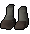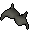 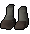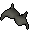Dagannoth-Dornenrüstzeug (M) |
Von den Dagannoth-Bestien auf der Waterbirth-Insel kann man Einzelteile erhalten, die zur Herstellung von Dornenrüstzeug verwendet werden können. Es ist ein gutes Rüstzeug für mittelstufige Charaktere und bietet guten Schutz gegen Schlagwaffen. |
|
   Drachenleder-Rüstzeug (Grün, blau (M), rot (M), schwarz (M)) |
Das gleiche gilt für Rüstzeug aus Drachenleder, auch wenn es viel stärker ist. Da ihm die Magie der Drachen innewohnt, ist es besonders gut gegen Zauber und andere magische Einwirkungen geeignet. Leider verschlechtert sich dadurch aber die magische Fertigkeit des Benutzers. |
|
   Karils Rüstzeug (M) |
Man sagt, dass Karils Rüstzeug aus einer längst vergessenen Zeit stammt und sehr mächtig ist. Man erhält es durch das Minispiel 'Kampf den Brüdern'. Wenn man das Glück hat, alle Teile des Satzes (inklusive der Waffe) zu erhalten, wird man mit einem speziellen Effekt belohnt. Um weitere Details darüber zu erhalten, lest bitte unter Kampf den Brüdern - Belohnungen nach. |
|
    Rüstzeug des 3. Zeitalters (M) |
Rüstzeug des 3. Zeitalters bietet vergleichbaren Schutz mit Schwarzdrachenleder, allerdings gibt es dafür zusätzlich noch einen hervorragenden Nackenschutz. Der vollständige Fernkampf-Angriffsbonus ist nicht zu verachten! Natürlich ist das Rüstzeug des 3. Zeitalters sehr selten, sodass sich viele Fernkämpfer für Rüstzeug aus Schwarzdrachenleder entscheiden. |
|
   Armadyls Rüstzeug (M) |
Die Soldaten Armadyls erhalten die Ordnung aufrecht und kämpfen gegen die Kräfte des Chaos und der Anarchie. Da sie gerne aus der Ferne angreifen, überrascht es nicht, dass dieses Rüstzeug für Fernkämpfer gedacht ist - und als solches ist es wahrscheinlich das begehrenswerteste Rüstzeug für jene, die die Kunst meisterhaft beherrschen, auf eine Münze aus einer Entfernung von 200 Schritten zu schießen. |
|
   Morrigans Rüstzeug (M) |
Morrigan war eine furchterregende Fernkämpferin, die mit Vorliebe Wurfspeere und Äxte auf ihre Feinde warf und sie selbst im Traum noch verfolgte. Ihr Rüstzeug hat bis heute überlebt, verfällt aber schnell. |
Magier-Rüstzeug
| Rüstzeug | Anmerkungen | |
![[Bild]](../../img/main/kbase/armour/mage/wizardhat.gif) 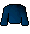 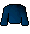![[Bild]](../../img/main/kbase/armour/mage/mageboots.gif) Magierroben |
Magierroben bieten zwar keinen Schutz vor Fernkampfangriffen oder Nahkampfattacken, verleihen dem Benutzer aber einen Zauberbonus und schützt vor magischen Angriffen. |
|
![[Bild]](../../img/main/kbase/armour/mage/splitbarktop1.gif) ![[Bild]](../../img/main/kbase/armour/mage/splitbarkbottom1.gif) ![[Bild]](../../img/main/kbase/armour/mage/splitbarkhat1.gif) ![[Bild]](../../img/main/kbase/armour/mage/splitbarkboots1.gif) ![[Bild]](../../img/main/kbase/armour/mage/splitbarkgloves1.gif) Spaltrinden-Rüstzeug (M) |
Spaltrinden-Rüstzeug schützt vor allem gegen magische Angriffe und Nahkampfattacken. Es verleiht seinem Benutzer außerdem einen Zauberbonus. Leider schützt es aber nicht gegen Fernkampfangriffe und gibt einen kleinen Malus auf Fernkampf. Die einzelnen Teile dieses Rüstzeugs könnt ihr während des Minispiels 'Schatten über Mort'ton' erhalten. |
|
![[Bild]](../../img/main/kbase/armour/mage/mysticrobe.gif) ![[Bild]](../../img/main/kbase/armour/mage/mysticbottom.gif) ![[Bild]](../../img/main/kbase/armour/mage/mystichat.gif) ![[Bild]](../../img/main/kbase/armour/mage/mysticboots.gif) 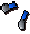 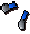Mystik-Roben (M) |
Mystik-Roben bieten, wie Magierroben auch, keinen Schutz vor Fernkampfangriffen oder Nahkampfattacken, verleihen dem Benutzer aber einen größeren Zauberbonus und schützen besser vor magischen Angriffen. |
|
![[Bild]](../../img/main/kbase/armour/mage/infinity_robetop.gif) ![[Bild]](../../img/main/kbase/armour/mage/infinity_robebottom.gif) ![[Bild]](../../img/main/kbase/armour/mage/infinity_boots.gif) ![[Bild]](../../img/main/kbase/armour/mage/infinity_gloves.gif) Phantom-Roben (M) |
Phantom-Roben verleihen ihrem Benutzer einen höheren Zauberbonus als Mystik-Roben. Um diese Roben zu erhalten, muss man die 'Schule der magischen Künste' besuchen oder mit einem anderen Spieler handeln, der seinen Satz verkaufen möchte. |
|
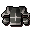![[Bild]](../../img/main/kbase/armour/mage/skeletallegs.gif) ![[Bild]](../../img/main/kbase/armour/mage/skeletalhat.gif) ![[Bild]](../../img/main/kbase/armour/mage/skeletalboots.gif) ![[Bild]](../../img/main/kbase/armour/mage/skeletalgloves.gif) Wallasalki-Rüstzeug (M) |
Ähnlich wie Spaltrinden-Rüstzeug bietet auch Wallasalki-Rüstzeug einen hervorragenden Schutz gegen Nahkampf und verleiht seinem Träger einen Bonus in Magie. Leider senkt es auch die Verteidigung gegen Fernkampfangriffe. Die Einzelteile, die man zur Herstelllung dieses Rüstzeugs benötigt, erhält man, indem man Dagannoths auf der Waterbirth-Insel besiegt. |
|
![[Bild]](../../img/main/kbase/armour/barrows/ahrim_body.gif) ![[Bild]](../../img/main/kbase/armour/barrows/ahrim_legs.gif) ![[Bild]](../../img/main/kbase/armour/barrows/ahrim_head.gif) Ahrims Roben (M) |
Man sagt, dass Ahrims Roben aus einer längst vergessenen Zeit stammen und sehr mächtig sind. Man erhält sie durch das Minispiel 'Kampf den Brüdern'. Wenn man das Glück hat, alle Teile des Satzes (inklusive der Waffe) zu erhalten, wird man mit einem speziellen Effekt belohnt. Um weitere Details darüber zu erhalten, lest bitte unter Kampf den Brüdern - Belohnungen nach. |
|
![[Bild]](../../img/main/kbase/armour/mage/elementalshield.gif) ![[Bild]](../../img/main/kbase/armour/mage/elementalmindhelm.gif) ![[Bild]](../../img/main/kbase/armour/mage/elementalbodybody.gif) Elementar-Rüstzeug (M) (Elementar, Geist, Körper) |
Elementar-Rüstzeug bietet verbesserten Schutz vor Gegnern, die magische Angriffe benutzen. Der Elementar-Schild ist besonders wirksam im Kampf gegen Skelett-Lindwürmer. |
|
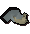![[Bild]](../../img/main/kbase/armour/mage/trail_items/mage_torso.gif) ![[Bild]](../../img/main/kbase/armour/mage/trail_items/mage_legs.gif) 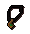 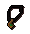Roben des 3. Zeitalters (M) |
Die Magierroben des 3. Zeitalters bieten sehr gute magische Angriffs- und Verteidigungsboni, wie man das von Roben dieser Epoche auch erwarten würde. Gegen Nah- oder Fernkampfangriffe bieten sie zwar keinen Schutz, aber die mächtigen Magier des 3. Zeitalters hatten mehr Interesse daran, die beste mit Magie durchwirkte Kleidung zu tragen - da ihre verbündeten Fern- und Nahkämpfer ihnen die Gegner vom Leib hielten. | |
![[Bild]](../../img/main/kbase/combat/pvp/member/hood.gif) ![[Bild]](../../img/main/kbase/combat/pvp/member/robe_top.gif) 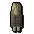 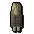Zuriels Roben (M) |
Zuriel war ein Magier mit außergewöhnlichen Zauberkräften. Er beherrschte die Magie der Ahnen wie kein anderer vor oder nach ihm. Einen großen Teil seiner Macht wohnt weiterhin seinen Roben inne, doch nach der langen Zeit hält diese Kraft nicht lange vor. |

Weitere Artikel in Kampf
|
|
|
Weiterführende Informationen Wenn euch dieser Artikel nicht weitergeholfen hat, könnt ihr in den folgenden Kapiteln der RuneScape-Webseite mehr Informationen finden:
|
|